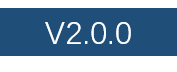

1. 概述
1.1. 数栈·数据中台产品体系介绍
本文档只是DTinsightIDE（开发套件）的产品使用手册，但在详细介绍开发套件产品之前，可以先了解一下数栈·数据中台整体的产品体系：
-
EasyV：秒级可视化大屏开发平台，数据价值触手可及。
-
数据质量（Valid）：支持对多种数据源进行数据质量监测与跟踪，保障数据产出稳定、可靠。
-
主数据管理（MDM）：解决不同业务系统主数据不统一的问题，支持主数据建模、审批流配置等功能。
-
数据API（API）：可视化配置数据API，统一监控与审批，实现API的一站式配置、审批与监控。
-
数据模型（Model）：保障数据平台内代码的规范性，更进一步实现规范化的数据管理。
-
标签工厂（Tag）：用户仅需关注标签生产逻辑，可大幅缩短标签开发周期。
-
玳数日志（EasyLog）：海量日志管理、分析，快速生成监控告警场景，提升故障发现率、降低运维成本。
1.2. 开发套件产品介绍
DTinsightIDE（开发套件）是由 袋鼠云开发的一款实时大数据智能操作系统，本文档是DTinsightIDE（开发套件）的使用手册。
| 本文档适用于如下版本：  |
袋鼠云DTinsightIDE，是一款高效的大数据实时/离线任务开发、任务调度、数据管理工具，支持对大数据实时处理过程进行可视化管理与控制。帮助客户提升开发效率，快速创建实时/离线计算任务，缩短开发周期；任务管理与运维一体化，减轻繁冗的运维工作。
-
系统架构
-
主要特性
-
全面托管的调度
提供强大的调度能力，支持按照时间、依赖关系的任务触发机制，支持各类任务按照DAG关系准确、准时运行。支持分钟、小时、天、周和月多种调度周期配置。 完全托管的服务，无需关心调度服务器资源问题。租户之间提供隔离，保证不同租户之间的任务不会相互影响。
-
支持多种任务类型
支持数据同步、SQL（兼容Hive语法）、MR、Python等多种任务类型，通过任务之间的相互依赖完成复杂的数据分析处理。数据同步模块支持多种数据源，提供稳定高效的数据传输。
-
可视化开发
提供可视化的代码开发页面，无需搭配任何开发工具，只要有浏览器有网络，便可随时随地进行开发工作。
-
监控告警
运维中心提供可视化的任务监控管理工具，支持以DAG图的形式展示任务运行时的全局情况。可方便地配置短信报警，任务发生错误可及时通知相关同学，保证业务正常运行。
-
约束与限制
仅支持Chrome浏览器65以上版本。
1.3. 用户角色
| 角色 | 权限 |
|---|---|
项目所有者 |
指项目空间的创建者，拥有项目空间内的最高权限，可对该项目空间的基本属性、数据源、当前项目空间的全部资源和项目成员等进行管理，并为项目成员赋予项目管理员、开发、运维、访客角色。 |
项目管理员 |
指项目空间的管理者，可对该项目空间的基本属性、数据源、当前项目空间的全部资源和项目成员等进行管理，并为项目成员赋予项目管理员、开发、运维、访客角色。项目管理员不能对项目所有者操作。 |
数据开发 |
数据开发角色的用户能够创建任务、脚本、资源等，新建/删除表，但不能执行发布操作。 |
运维 |
运维角色的用户由项目管理员分配运维权限；拥有发布任务、运维任务的操作权限，没有数据开发的操作权限。 |
访客 |
只具备查看权限，没有权限进行编辑任务、运维等操作 |
| 目前DTinsightIDE的用户角色是固定的，不支持编辑，每个角色详细的权限点可参考附录。 |
2. 名词解释
| 专有名词 | 解释 |
|---|---|
项目 |
项目，是一组资源、任务等信息的集合，用户可以针对项目进行各种操作；一个项目中，既包括实时任务，也包括离线任务 |
HDFS |
Hadoop分布式文件系统（Hadoop Distributed File System） |
MR |
即MapReduce，一种开源并行计算框架 |
Flink |
Apache Flink，一种分布式、高性能、高可用且准确的开源流处理框架 |
UDF |
User Defined Function，用户自定义函数，通常适用于SQL任务 |
Spark |
Apache Spark，一种开源的，专为大规模数据处理而设计的快速通用的计算引擎 |
任务实例 |
指某任务执行过程中，除了其代码和静态资源外，还包括被分配的动态资源（计算节点、存储资源等） |
上下游任务 |
A任务成功的执行完成后，B、C任务才可以执行，这种行为称之为B、C依赖于A；在这个例子中，A是B、C的上游任务，B、C是A的下游任务。 |
杀任务 |
终止某个任务实例的运行 |
重跑任务 |
重新运行某个任务（重跑通常应用于离线任务中） |
补数据 |
当任务由于某些原因，修改了业务逻辑时，或发生异常，用户希望对以前的数据重新进行计算，此时会使用“补数据”功能，即手动配置任务的数据源时间段，令其再次运行 |
业务日期 |
可理解为业务发生的日期，在DTinsightIDE中，业务日期=任务的定时执行时间-1天 |
3. 主要功能及操作方式
3.1. 项目
“项目”组成了DTinsightIDE的核心，一个项目是一组资源的集合，例如为了统计某个APP的活跃用户情况，需要多位开发人员根据业务需求创建不同的实时任务、离线任务，那么这组用户、由这组用户创建的实时任务、离线任务等等资源，可以理解为一个“项目”。
| 每个项目之间是彼此独立的，不同项目间的数据是隔离的 |
3.1.1. 项目总览
有2种查看项目的方式：
-
用户登录成功后停留的页面，可查看其管理、参与的各个项目，同时可进入任意一个项目操作。
-
在任意页面，点击DTinsightIDE页面左上角的LOGO，页面跳转至项目总览页面，可以浏览当前用户管理、参与的所有项目。
3.1.2. 创建项目
-
创建项目
通常为了完成一组较为复杂的，包含了很多实时、离线任务，且需要多为用户协作时，需要创建一个项目。在项目总览，点击创建项目按钮，输入项目唯一标识、项目描述即可。
-
项目的状态
当用户在创建项目时，DTinsightIDE后台会进行各种初始化工作，因此项目可能会进入不同的状态。

如上图所示，项目可能会存在多种状态：
-
初始化：创建项目后，系统会进行项目配置的初始化工作，因此可能在项目概览的项目列表中看到这个状态。初始化是一种过渡状态，通常较为短暂。如果某项目长期处于“初始化”状态，则您需要联系管理员处理。
-
正常：项目初始化成功后，会进入正常状态，这也是绝大多数的项目状态。
-
失败：项目初始化失败，会进入失败状态，只有失败状态的项目才能被删除。
| 只有特定角色的用户才可以创建项目、删除项目 |
3.1.3. 项目成员的管理
项目除了将各类资源集中进行管理与操作外，通常还会有多位用户共同来完成不同的职能。
-
创建项目的用户为“项目所有者”，此外还有项目管理员和普通项目成员，这3类角色都可以创建实时和离线任务，并管理项目内的资源。
-
每个项目只有一个项目所有者，可以有多位项目管理员，多位普通成员。
-
每个用户可以同时参与多个项目。
-
添加项目成员
项目所有者或项目管理员希望其他用户加入本项目，共同创建、维护任务时，需要将其他用户加入本项目。
-
进入项目管理→成员管理
-
点击添加成员，输入成员账号进行搜索，并在搜索结果中选择一个或多个用户，为其设定角色
-
点击确定后，此用户即加入了这个项目。
-
新加入的用户需要首先登录一次系统，才可在项目列表中看到此项目。
-
-
移除项目成员
项目所有者/项目管理员认为某用户无需在本项目中继续操作时，可将其移出本项目。
-
进入项目管理-成员管理
-
在项目成员列表中点击移出项目。某成员被移出项目后，不能在本项目中进行任何操作，但其已创建的任务、已上传的资源不会被删除。
-
-
改变项目成员的角色
项目所有者想将普通成员置为项目管理员，与其一起管理项目组内的其他成员时，可将其“置为管理员”。相对的，也可以将项目管理员置为普通成员。
-
进入项目管理-成员管理
-
在项目成员列表中，分别点击置为管理员或置为普通用户。
-
-
管理项目成员的权限
只有项目所有者和项目管理员才可以进行项目成员的管理，普通项目成员没有项目成员管理的权限。
| 任一项目中，除了项目创建者外，最多有其他2位项目管理员 |
3.2. 数据集成
| DTinsight的基于Flink实现的数据集成底层模块现已开源，欢迎参与到开源项目的建设中。开源组件的详细使用方式请参考： FlinkX数据集成组件 |
数据集成模块是在各个存储单元之间执行数据交换的通道。为了在DTinsightIDE进行大规模数据集的挖掘与计算，通常的做法是在任务执行前将数据传输至DTinsightIDE，并在任务执行结束后将计算结果传输至外部存储单元（例如MySQL等应用数据库）。数据集成的作用如下图所示：

数据集成模块主要由以下几部分构成：
-
数据源管理
-
数据同步任务的配置与执行
3.2.1. 支持的数据源
不同的DTinsightIDE版本对数据源的支持能力不同，本版本支持的数据源包括：MySQL、SQLServer、Oracle、HDFS、Hive、HBase
3.2.2. 数据源管理
数据源管理是对外部存储单元访问参数的管理，数据集成模块需要与离线任务开发配合起来才能发挥作用，实际是由定时任务来执行数据传输的。
在项目上方的数据集成菜单，进入数据数据源管理页面，可看到目前已经集成的数据源列表，包括数据源名称、类型、连接信息、描述、最近修改人、最近修改时间、状态等信息，同时可执行编辑、删除等操作。
-
数据源的配置
-
在项目上方的数据集成菜单，进入项目源列表页面；
-
在数据源列表右上角的新增数据源，选择不同的数据源类型，需要填写不同的配置信息。
-
关系型数据库（MySQL、Oracle、SQLServer）
-
JDBC URL:访问数据库的连接地址，JDBC URL格式如：
jdbc:mysql://172.16.8.104:3306/test?charset=utf8 -
用户名：访问数据库的用户名
-
密码：访问数据库的密码
-
-
Hive
-
JDBC URL:访问Hive的连接地址，JDBC URL格式如：
jdbc:mysql://172.16.8.104:3306/test?charset=utf8 -
用户名：访问数据库的用户名
-
密码：访问数据库的密码
-
DefaultFS：
-
高可用配置：补充高可用配置参数，可以使DTinsightIDE访问高可用模式下的Hive数据源，高可用配置的示例如下：
{ "dfs.nameservices": "nameserviceTest" "dfs.ha.namenodes.nameservice.nameserviceTest":"testDfs", "dfs.namenode.rpc-address.nameserviceTest.testDfs":"", "dfs.namenode.rpc-address.nameserviceTest.testDfs":"", "dfs.client.failover.proxy.provider.nameserviceTest": "org.apache.hadoop.hdfs.server.namenode.ha.ConfiguredFailoverProxyProvider" } -
关于HDFS高可用的更多信息可参考 Hadoop官方文档
-
-
HDFS
-
DefaultFS：即HDFS的namenode的节点地址，格式如：
hdfs://ServerIP:Port。 -
高可用配置：补充高可用配置参数，可以使DTinsightIDE访问高可用模式下的HDFS数据源，高可用配置的示例如下：
"hadoopConfig":{ "dfs.nameservices": "testDfs", "dfs.ha.namenodes.testDfs": "namenode1,namenode2", "dfs.namenode.rpc-address.testDfs.namenode1": "", "dfs.namenode.rpc-address.testDfs.namenode2": "", "dfs.client.failover.proxy.provider.testDfs": "org.apache.hadoop.hdfs.server.namenode.ha.ConfiguredFailoverProxyProvider" } -
关于HDFS高可用的更多信息可参考 Hadoop官方文档
-
-
HBase
-
Zookeeper集群地址：
-
必填，多个地址间用逗号分割。例如：
IP1:Port, IP2:Port, IP3:Port/子目录。默认是`localhost`,在伪分布式模式时使用。若在完全分布式的情况下使用则需要修改。如果在hbase-env.sh设置了`HBASEMANAGESZK`， 这些ZooKeeper节点就会和HBase一起启动。 -
Port: ZooKeeper的zoo.conf中的配置。客户端连接的端口， 默认2181。
-
子目录：HBase在ZooKeeper中配置的子目录。
-
-
其他参数：以JSON方式传入其他参数，例如：
"hbaseConfig": { "hbase.rootdir": "hdfs: //ip:9000/hbase", "hbase.cluster.distributed": "true", "hbase.zookeeper.quorum": "***" }
-
-
测试连通性
-
在添加/编辑数据源时，可以主动测试数据源的连通性，只有数据源连接正常的情况下才可以被添加/编辑。
-
-
-
-
数据源的状态
已配置的数据源，系统会检测其是否在数据同步任务中被使用，“使用中”状态的数据源只能被编辑，但不能被删除
| 为了使DTinsightIDE可以访问对应的存储单元（包括读/写），请务必保证DTinsightIDE与这些存储单元之间的网络畅通，否则会导致任务失败。 |
| 若您的存储单元配置参数有变更，请及时修改数据源的配置，否则可能导致任务执行失败。 |
3.2.3. 数据同步任务的配置
数据同步任务的配置共分为5个步骤：
-
选择数据来源：选择已配置的数据源，系统会读取其中的数据；
-
选择数据目标：选择已配置的数据源，系统会向其写入数据；
-
字段映射：配置数据来源与数据目标之间的字段映射关系，不同的数据类型在这步有不同的配置方法；
-
通道控制：控制数据同步的执行速度、错误数据的处理方式等；
-
预览保存：再次确认已配置的规则并保存；
3.2.3.1. 关系型数据库
DTinsightIDE支持MySQL、Oracle、SQLServer3种关系型数据库的数据同步，支持从从这几类数据库中读取/写入数据。
3.2.3.1.1. 作为数据源
关系型数据库作为数据源，需配置以下信息：
-
选择数据源；
-
选择表；
-
数据过滤条件：针对源头数据筛选条件，根据指定的column、table、where条件拼接SQL进行数据抽取，暂时不支持limit关键字过滤。利用where条件可进行增量同步，具体说明如下：
增量导入在实际业务场景中，往往会选择当天的数据进行同步，通常需要编写where条件语句，请先确认表中描述增量字段（时间戳）为哪一个。如tableA增量的字段为create_time，则填写`create_time>您需要的日期`，如果需要日期动态变化，可以填写`${bdp.system.bizdate}`、`${bdp.system.cyctime}`调度参数，关于调度参数的详细信息请参考系统参数。
-
切分键：DTinsightIDE在进行数据抽取时，如果指定切分键，系统可以使用切分键的字段进行数据分片，数据同步因此会启动并发任务进行数据同步，这样可以大大提供数据同步的效能。
-
推荐将表的主键作为切分键，因为表主键通常情况下比较均匀，因此切分出来的分片也不容易出现数据热点。
-
目前DTinsightIDE目前支持MySQL数据库数值型切分键，支持Oracle数据库数值型、字符串类型切分键，不支持字符串、浮点、日期等其他类型，也不支持其他数据库。如果指定了不支持的类型，则忽略切分键功能，使用单通道进行同步。
-
如果不填写切分键，数据同步视作使用单通道同步该表数据 。
-
切分键的配置需要与第四步的“通道控制”联合使用，下面是典型的应用场景：
假设MySQL的tableA表中，有一个INT类型的字段名为id的主键，那么可以在切分键输入框中输入id字段，并在第四步的“作业并发数”中配置为5，则系统会产生5个并发线程同时读取MySQL表，每个任务会根据id字段的值进行数据切分，保证5个并发线程读取的数据是不同的，通过以上机制即可以加速数据读取的速度。
-
-
映射配置：
-
支持挑选部分字段进行导出。
-
支持字段换序，即字段可以不按照表schema信息顺序进行导出。
-
3.2.3.1.2. 作为数据目标
关系型数据库作为数据目标，需配置以下信息：
-
选择数据同步目标；
-
选择表；
-
导入前、导入后准备语句：执行数据同步任务之前率先执行的SQL语句。目前向导模式只允许执行一条 SQL 语句，例如：清除旧数据。
-
主键冲突的处理：
-
replace into模式：目前只有MySQL数据库支持replace into模式 没有遇到主键/唯一性索引冲突时，与insert into行为一致，冲突时会用新行替换原有行所有字段；
-
insert into模式：当主键/唯一性索引冲突时会写不进去冲突的行，以脏数据的形式体现，脏数据的配置与管理请参考脏数据管理；
-
-
映射配置：支持挑选部分字段进行写入。
3.2.3.2. Hive
3.2.3.2.1. 作为数据源
-
选择数据源；
-
选择表；
-
分区：读取数据所在的分区信息，支持直接填写分区名称，同时支持系统调度参数:
${bdp.system.premonth} ${bdp.system.cyctime} ${bdp.system.bizdate} ${bdp.system.currmonth}
3.2.3.2.2. 作为数据目标
-
选择数据源；
-
选择表；
-
分区：需要写入数据表的分区信息，必须指定到最后一级分区。例如把数据写入一个2级分区表，可以通过`pt=20180401/ds=abcdef`。其中pt是一级分区字段，ds是二级分区字段。
-
对于非分区表，该值务必不要填写，表示直接导入到目标表。
-
DTinsightIDE不支持数据路由写入，对于分区表请务必保证写入数据到最末一级分区。
-
分区的填写支持直接填写分区名称，同时支持系统调度参数:
${bdp.system.premonth} ${bdp.system.cyctime} ${bdp.system.bizdate} ${bdp.system.currmonth}
-
-
写入模式： insert overwrite：写入前将清理已存在的数据文件，之后执行写入； insert into：写入前已有的数据不会删除，系统会写入的新的文件；
3.2.3.3. HDFS
3.2.3.3.1. 作为数据源
HDFS作为数据源，需配置以下信息：
-
选择数据源；
-
读取的HDFS文件路径：要读取的文件路径，多个路径可以用逗号隔开；
-
读取的HDFS文件类型：目前只支持用户配置为"text"、"orc" ，text表示textfile文件格式，orc表示orcfile文件格式；
-
编码格式：读取文件的编码配置，默认为UTF-8，还支持GBK；
-
分隔符：读取的字段分隔符。需要注意的是，读取textfile数据时，需要指定字段分割符（默认值\001），但在读取orcfile时，用户无需指定字段分割符；
-
映射配置：
-
支持挑选部分字段进行导出。
-
支持字段换序，即字段可以不按照表schema信息顺序进行导出。
-
3.2.3.3.2. 作为数据目标
-
选择数据源；
-
输入HDFS文件路径：存储到Hadoop hdfs文件系统的路径信息，HdfsWriter会根据并发配置在此目录下写入多个文件。为与hive表关联，请填写hive表在hdfs上的存储路径。例：Hive上设置的数据仓库的存储路径为：/user/hive/warehouse/ ，已建立数据库：test，表：hello；则对应的存储路径为：/user/hive/warehouse/test.db/hello；
-
分隔符：写入时的字段分隔符,需要用户保证与创建的Hive表的字段分隔符一致，否则无法在Hive表中查到数据；
-
编码格式：默认为utf-8，请慎重修改；
-
文件名：写入时的文件名；
-
输入HDFS文件类型：目前只支持用户配置为"text"、"orc" ，text表示textfile文件格式，orc表示orcfile文件格式；
-
写入模式：写入前数据清理处理模式：append，追加；overwrite，覆盖；
-
映射配置：
-
支持挑选部分字段进行写入。
-
支持字段换序，即字段可以不按照表schema信息顺序进行写入。
-
3.2.3.4. HBase
3.2.3.4.1. 作为数据源
3.2.3.4.2. 作为数据目标
3.2.3.5. 通道控制
3.2.3.5.1. 同步速率与作业并发
-
作业速率上限
设置作业速率上限，则数据同步作业的总速率将尽可能按照这个上限进行同步，此参数需根据实际硬件配置调整，默认为1，可支持1-20MB/s的同步速度。
当数据量较大，且硬件配置较好时，可以提高作业速率上限，DTinsightIDE将会提高同步速度，使用较短的时间完成同步。
-
作业并发数
作业速率上限=作业并发数*单作业的传输速率，当作业速率上限已定，选择的并发数越高则单并发的速率越低，同时所占用的内存会越高，这可以根据你的业务需求选择设定的值。
作业并发数下拉框选择对象，取决作业速率上限。作业速率上限选择值nMB/s，作业并发数最大能选择n
| 流量度量值是数据集成本身的度量值，不代表实际网卡流量，实际流量膨胀看具体的数据存储系统传输序列化情况。 |
| 关系型数据库设置作业速率上限和切分键才能根据作业速率上限将表进行切分，关系型数据库只支持数值型作为切分键，但Oracle数据库支持数值型和字符串类型作为切分键。 |
3.2.3.5.2. 错误数据处理
-
错误记录管理
在数据同步任务中，可开启错误记录管理，开启后，任务会将数据同步过程中的错误数据写入指定的Hive表（可指定表名、生命周期）。
在数据同步任务的周期执行过程中，每个实例都会将脏数据写入一个分区，每个实例一个分区。
-
脏数据数量控制
支持对于脏数据的自定义监控和告警，包括对脏数据最大记录数阈值，当传输过程出现的脏数据大于指定的数量，则报错退出。
支持对于脏数据占比的统计，当任务执行结束后系统统计脏数据占总的同步数据的占比，超过阈值时将任务置为失败。
| 错误记录占比是数据同步实际执行结束后统计的，并不会在任务同步过程中统计。 |
3.2.3.6. 版本支持
DTinsightIDE数据集成模块对不同数据库的版本支持情况如下表所示：
| 数据源类型 | 支持的版本 |
|---|---|
MySQL |
5.0及以上 |
Oracle |
11g及以上 |
SQLServer |
SQLServer 2008及以上 |
Hive |
|
HDFS |
|
ElasticSearch |
|
HBase |
3.2.4. 最佳实践
3.2.4.1. MySQL导入Hive
3.2.4.2. Hive导入MySQL
3.2.4.3. MySQL数据库增量同步
经数据源管理的数据源配置后，DTinsightIDE即可以从已配置的数据源中读取或写入数据。下面以MySQL→HDFS，并由DTinsightIDE访问HDFS中的数据为例，介绍操作流程：
3.2.4.4. MySQL导入HDFS
进入任务开发模块，进行如下配置：
-
数据来源： 类型选择MySQL，并选中刚刚配置的数据源`dataSourceExample`，选择其中的表`tableAge`，数据过滤规则、切分键不填写。
-
选择目标： 类型选择HDFS，并选中刚刚配置的数据源`hdfsSourceExample`，其他配置参数为：
-
路径：需要填写的格式为`user/hive/warehouse/项目名称.db`。
-
分隔符：用户自定义，或者不填写，不填写时，会采用HIVE默认的分隔符`\001`。
-
编码：可选择UTF-8或GBK。
-
文件名：这里实际上填写的是hive中的表名（本例子中填写为`tableNameAge`）。
-
文件类型：支持TEXT和ORC类型。
-
主键冲突规则：即执行数据同步时，若出现主键冲突，则报错或忽略。
-
-
字段映射： 通过映射的方式，将左右2侧的字段映射起来，用户可通过同名映射或同行映射快速配置。对于HDFS文件，可能出现无法读取字段的问题，用户需手动配置每个HDFS字段。
-
配置调度周期与依赖关系：在右侧的任务面板中配置任务的生效日期、调度日期、起调时间、需依赖的上游任务、自依赖等信息，详细配置方式请参考调度属性配置。
-
发布任务：确认任务信息无误后，提交执行，发布成功后，此任务不会立即执行，而是会在当天（或第二天）的22:00生成任务实例，待执行条件满足后才执行，如果需要数据同步任务立即执行，请参考调度属性配置中的补数据或常见问题。
3.2.4.5. 执行数据同步任务
任务提交成功后，为了立即执行，需在任务管理中设置补数据任务，即可立即进行数据同步。
3.2.4.6. 新建hive表，并读取数据
在任务管理模块中进行如下操作：
-
点击新建表，建立内部表或外部表，内部表与外部表的区别请参考常见问题。或点击DDL建表，通过SQL的形式建表。
-
新建表的表名，必须与[syncJobConfig_mysql-hdfs]中的文件名对应，否则会导致无法关联到对应的文件，造成表中没有数据。
-
新建表的编码格式，路径等信息，也必须与[syncJobConfig_mysql-hdfs]中的编码格式、路径对应起来，否则会造成无法关联到对应的文件，造成表中没有数据或编码错误。
-
新建表的字段信息，必须与数据同步任务中的字段对应，否则会造成无法关联到对应的文件。
-
建表成功后，即实现当前表与HDFS数据之间的关联，即可以在[jobDevelopment]中当前项目的任意一个SQL查询到数据。
|
新建hive表的注意事项
[createTableAndReadData]与[runSyncJob]两个步骤不区分先后顺序，但数据同步任务时填写的路径、文件名、编码等参数需要与建hive表时的路径、表名、编码对应起来
|
| 在本例中，主键冲突规则的配置生效，是依赖于MySQL中`tableAge`的主键， |
3.3. 数据开发
数据开发页面包括实时任务开发与离线任务开发，任务开发模块是根据业务需求，设计数据计算流程并编码的模块。下面分为实时任务开发与离线任务开发2个模块分别介绍。
3.3.1. 离线任务开发
离线任务开发模块主要是设计数据计算流程，并实现为多个相互依赖的任务，供调度系统自动执行的主要操作页面。
对象
在数据开发阶段，DTinsightIDE提供了4种对象：任务、脚本、资源和函数。它们之间的项目关系如下图所示：
每个对象的说明如下：
流程
一个任务的开发和使用流程如下图所示：
任务运行说明
由流程的介绍可知，DTinsightIDE提供了3种运行方式，以使任务中的计算语句生效，适用场景和限制条件如下：
| 操作 | 触发方式 | 运维中心是否有实例生成 | 调度属性情况 | 适用场景 | 特殊说明 |
|---|---|---|---|---|---|
页面直接运行 |
手动触发 |
否 |
不受调度周期和依赖关系影响 |
适用于代码调试阶段，无需保存提交 |
支持脚本和任务，但任务、脚本类型仅支持SQL1种 |
系统自动运行 |
系统触发 |
是 |
受调度周期和依赖关系影响 |
是使用DTinsightIDE实现数据自动计算的主要方式，需要运维人员在运维中心维护所有周期实例按序成功执行 |
仅支持任务，不支持脚本，且使用最新提交的版本 |
补数据运行 |
手动触发 |
是 |
受调度周期和依赖关系影响 |
是对系统自动运行方式的补充，部分任务由于新建或者出错，需要触发今天之前一段时间的数据计算时使用该功能 |
仅支持任务，且使用最新提交的版本 |
3.3.1.1. 任务开发
任务开发的过程实际上就是对表的操作过程，本节将从创建任务、创建表开始。
3.3.1.1.1. 新建任务
DTinsightIDE提供了5种任务类型，本节以创建SQL任务为例，介绍如何创建一个任务并编辑代码内容。更多任务类型的使用请参见任务类型。
-
新建SQL任务
进入“数据开发”菜单，点击“新建离线任务”按钮，并填写新建任务弹出框中的配置项，配置项说明：
-
任务名称：需输入英文字母、数字、下划线组成，不超过64个字符。
-
任务类型：可选择SQL、MR、数据同步、Python、虚节点。
-
存储位置：此任务在页面左侧的任务存储结构中的位置。
-
描述：此任务的描述，可输入长度不超过200个的任意字符。
点击“保存”，弹窗关闭，即完成了新建任务，同时系统自动打开新建的SQL任务。
-
编辑SQL任务代码
SQL任务创建好后，可以在代码编辑器中编写SQL语句（该SQL的语法为Hive SQL，与传统关系型数据库的SQL语法有所不同，详细的SQL编辑说明请 Hive SQL的编码说明）。
编写的SQL语句示例如下：
select * from bank_data;查询结果最多只展示1000条数据，DTinsightIDE不支持在页面上下载大量数据。
如果执行的是多个SQL语句，会根据顺序依次下发执行。
-
配置节点任务的调度属性
DTinsightIDE提供了丰富的时间周期和依赖关系支持，并提供了基于时间的系统参数和自定义参数支持，请参考相应文档选择适合您业务需要的配置方式。
代码和参数配置调试完毕后，一个周期任务需要发布以后才会触发调度系统按配置周期定时产生运行实例并执行代码，提交任务的具体操作请参见发布任务。
为使周期任务运行并在每次运行时适应上下文环境，需要配置时间周期和参数。
| 由于节点任务有周期调度属性，因此内容建议以计算类语句为主，表操作语句建议使用可视化建表和脚本开发等其他功能来运行和维护。 |
3.3.1.1.2. 创建表
创建表有2种方式可视化建表和SQL建表。
-
可视化建表
进入某个项目后，点击数据管理>表管理，单击右上角的新建表，按照可视化建表页面进行操作，即可成功建表。
-
SQL建表
如果习惯编辑SQL语句，或希望一次运行多个建表语句，或需要修改表结构等，可通过SQL脚本进行脚本开发，详情请参见脚本开发。
新建一个类型为SQL的脚本文件，在编辑区填写任意SQL语句（包括新建或修改表的DDL语句）并单击直接运行。
| DTinsightIDE的建表语句与通用的Hive不同，建表时需要指定生命周期 |
下面是建表SQL代码的举例
CREATE TABLE big_table2 (a string, b string) PARTITIONED BY (ds string) lifecycle 10;建表语法为：
CREATE [EXTERNAL] TABLE [IF NOT EXISTS] table_name [(col_name data_type [COMMENT col_comment], ...)] [COMMENT table_comment]
[PARTITIONED BY (col_name data_type [COMMENT col_comment], ...)]
[CLUSTERED BY (col_name, col_name, ...) [SORTED BY (col_name [ASC|DESC], ...)] INTO num_buckets BUCKETS]
[ROW FORMAT row_format]
[STORED AS file_format]
[LOCATION hdfs_path]
lifecycle N;其中lifecycle后面的N表示此表的生命周期有多少天。
-
查看表
查看表的方式有两种：表查询和查找数据，详情如下：
-
表查询：建表成功后，单击数据开发页面左侧导航栏的表查询，找到新建的表进行查询，详情请参见表查询。
-
查找数据：建表成功后，点击数据管理>表管理，搜索表名，找到新建的表进行查询。
-
3.3.1.1.3. 运行任务
DTinsightIDE目前支持3种方式来使一个任务中的代码对数据生效：页面直接运行，系统自动周期运行和补数据运行。页面直接运行适用于代码调试修改，不考虑调度属性配置的情况，或者是不需要提交的直接运行的对象如脚本开发等。本文将以SQL节点任务为例，说明如何在代码编辑页面直接运行。
| 仅SQL任务、脚本2种类型支持页面直接运行，其他类型不支持页面直接运行。 |
-
页面直接运行一个任务
单击一个SQL任务打开编辑区，选择想要执行的部分语句，然后在操作区单击运行按钮即可触发选定代码执行。如果不选择部分代码，而是直接单击运行，则会默认运行当前任务的全部代码。
-
查看运行日志和结果
任务触发运行后，在编辑区下方会显示日志页，如果有语句的运行结果返回了数据集，则在日志页旁显示结果页，也支持结果下载。
无论运行几次，日志页只有一个，仅显示最近一次触发运行的日志信息，之前的日志会被覆盖。结果页可以存在多个，按语句执行顺序依次显示，最多可以显示20个结果页，方便您进行对比数据等操作。
多个语句触发执行时，这些语句将串行执行，日志内容依次显示在日志页中，结果则按每个语句的执行顺序分别显示在不同的结果页中。
| 在页面上点击“运行”时，运行select语句时，页面最多可显示数据集的前1000条记录，故请控制每次查询产生的记录数。 |
3.3.1.1.4. 发布任务
提交任务操作，使得一个周期任务的代码和周期配置进入调度系统，从第二天开始，调度系统将根据该任务的周期配置每天生成实例并定时运行，直到该任务被删除，调度系统才会停止为该任务生成实例并运行。
| 新增或修改任务时，如果当天22点00前提交成功，则在第二天的实例中即可看到结果；如果当天22点00后提交成功，则在第三天的实例中才会看到结果。 |
| 一个周期任务只有提交成功后才会进入调度系统，从而使得调度系统按配置周期定时产生实例并运行。 |
-
发布SQL任务
单击打开该任务，在右上角点击“发布”按钮，可输入发布的备注信息，点击“确定”。
-
查看任务历史版本
发布任务之后，系统会产生一条版本记录，通过点击任务开发-任务属性-历史发布版本中查看发布的时间和备注信息的。
-
对比任务版本
在SQL任务的历史发布版本中，可以查看到曾经提交过的代码。选择查看提某个代码版本，点击代码，系统可对比当前代码与选中版本的代码的差别。
3.3.1.1.5. 冻结任务
如果需要让某个任务停止运行一段时间，可以在任务开发模块打开某任务，在右侧调度依赖面板中勾选冻结，表示此任务进入冻结状态
-
处于冻结状态的任务，其周期实例依然会生成，但不会运行。
-
对于存在依赖关系的多个任务，如果将上游任务A冻结，则下游任务B也会进入“冻结”状态，B任务的实例也会产生，但不会运行，在B任务的执行日志中会打印出是由于A任务被冻结才没有运行的。
-
周期任务的冻结，是第二天生效的，且冻结状态的任务，生成的实例也是冻结状态，不会直接运行，必须将实例解冻后再单击重跑，才会运行；如果需要紧急冻结任务，可以在周期实例中进行冻结操作。
| 依然可以对冻结状态的任务执行补数据，补数据实例会正常运行 |
3.3.1.1.6. 删除任务
如果在编辑过程中想要放弃一个任务编辑版本，或者周期任务提交后想从调度系统中去掉该任务的自动运行，可以在左侧的任务面板中右键点击此任务，选择删除。
-
如果此任务被其他任务依赖（是其他任务的上游任务），则此任务不能被删除，您需要先解除依赖关系再进行删除
-
任务删除后，已生成的任务实例不会被删除，但会运行失败
3.3.1.1.7. 搜索任务
当任务数量很多时，可以在左侧的任务管理面板中点击搜索任务，或按下Ctrl+P快捷键，通过输入任务名称并按下回车搜索并打开任务。
3.3.1.2. 任务类型
DTinsightIDE提供了5种任务类型，分别适用于不同的使用场景：
-
SQL任务
SQL任务支持您直接在Web端编辑和维护SQL代码，并可方便地调试运行和协作开发。DTinsightIDE还支持代码内容的版本管理和上下游依赖自动解析等功能，使用示例请参见新建任务。
DTinsightIDE的SQL任务的代码内容遵循Hive的语法。Hive SQL的语法请参考 Hive官方文档
-
MR任务
MR任务用于在Spark的MapReduce编程接口（Java API）基础上实现的数据处理程序的周期运行，详细的编码规则请参考 Spark Java API官方文档。
DTinsightIDE完全按照Spark官方的编程接口，您可以将代码打包成为JAR类型的资源文件上传到DTinsightIDE中，然后配置MR任务。
-
数据同步任务
数据同步任务主要完成数据在不同存储单元之间的迁移，详细的数据同步任务配置规范请参考数据集成模块。
-
Python任务
Python任务用于在Spark的Python编程接口（Python API）基础上实现的数据处理程序的周期运行，详细的编码规则请参考 Spark Python API官方文档。
DTinsightIDE完全按照Spark官方的编程接口，您可以将代码打包，并以资源文件的形式上传到DTinsightIDE中，然后配置Python任务。
-
虚节点任务
虚拟节点属于控制类型节点，它不产生任何数据的空跑节点，常用于多个任务统筹节点的根节点。
| 多个任务中最终输出表有多个分支输入表，且这些输入表没有依赖关系时便经常用到虚拟节点。 |
假设：输出表由3个数据同步任务导入的源表经过SQL任务加工产出，这3个数据同步任务没有依赖关系，SQL任务需要依赖3个同步任务，则任务依赖关系如下图所示：
用一个虚节点任务作为起始根节点，3个数据同步任务依赖虚节点，SQL加工任务依赖3个同步任务。
| 虚节点任务没有日志信息：虚节点任务不会真正的执行，等到虚节点运行的时候，便会直接被置为成功，所以虚节点没有日志信息。 |
3.3.1.3. 调度属性配置
3.3.1.3.1. 周期配置
任务的时间属性目前支持月、周、天、小时和分钟5种配置方式，本文将分别介绍配置方式和调度系统中的实例运行情况。
| 一个周期运行的任务，它的依赖关系的优先级大于时间属性。在时间属性决定的某个时间点到达时，任务实例不会马上运行，而是先检查上游是否全部运行成功。 |
-
上游依赖的实例没有全部运行成功并且定时运行时间已到，则实例不会运行。
-
上游依赖的实例全部运行成功并且定时运行时间还未到，则实例不会运行。
-
上游依赖的实例全部运行成功并且定时运行时间已到，则实例具备了运行的条件，待其获得集群的计算资源后即可以开始运行，集群资源的分配由Spark集群分配，用户不可干预。
对于离线任务（包括SQL、MR、数据同步），可在“调度依赖”侧边栏，可配置此任务的调度周期等参数，具体包括如下内容：
-
调度属性
调度属性的配置包括如下内容：此任务接受调度还是停止调度？此任务在什么时间生效？多长时间间隔运行一次？具体什么时候运行？具体包括：-
调度状态
选中“冻结”，表示此任务停止调度，不会进行实际的计算（通常此功能用于暂时不需要运行，但也不想删除的任务）； 若勾选“冻结”，任务每天仍会产生实例，但调度时会直接返回失败状态，不会真正运行任务逻辑。 -
生效日期：任务只在生效日期内执行；
-
调度周期：分为{天；周；月；小时；分钟}，若选中“天”，则表示此任务每天执行一次；
-
起调时间：用户设定调度周期后，还需要设定具体在哪个时刻点启动任务。根据用户选择的调度周期不同，起调时间需要配置不同的参数：
-
| 调度周期 | 起调时间配置 |
|---|---|
日 |
天调度任务，即每天自动运行一次。新建周期任务时，默认的时间周期为每天0点运行一次，可根据需要自行指定运行时间点，配置“具体时间”：
|
周 |
周调度任务，即每周的特定几天里每天在特定时间点自动运行一次，需配置“选择时间”和“具体时间”：
|
月 |
月调度任务，即每月指定的特定几天里每天在特定时间点自动运行一次，需配置“选择时间”和“具体时间”：
|
小时 |
小时调度任务，即每天指定的时间段内按N*1小时的时间间隔运行一次，比如每天1点到4点的时间段内，每1小时运行一次。当调度周期切换到非天级调度时，节点起调时间将不可选，需配置“开始时间”、“结束时间”和“间隔时间”：
|
分钟 |
分钟调度任务，即每天指定的时间段内按N*指定分钟的时间间隔运行一次，目前能支持的最短时间间隔为每5分钟运行一次，当调度周期切换到非天级调度，节点起调时间将不可选，需配置“开始时间”、“结束时间”和“间隔时间”：
|
| 按照小时周期调度时，时间周期按左闭右闭原则计算，比如配置为从0点到2:59点的时间段内，每隔1个小时运行一次，表明时间区间为[00:00，02:59]，间隔为1小时，调度系统将会每天生成3个实例，分别在0:00／1:00／2:00运行。 |
-
任务实例的生成
DTinsightIDE在每天22:00统一生成第二天所有需要的任务实例，基于以上设计，任务开发时需要注意任务的提交时间，这里以一个天周期调度任务A为例：
任务A基本信息：调度周期：1天；具体调度时间：8:00；
1）若您在1月1日21:00提交A任务（时间轴上侧），DTinsightIDE会在当天22:00产生A任务的实例，并会在1月2日8:00第一次运行；
2）若您在1月1日23:00提交A任务（时间轴下侧），由于DTinsightIDE已经在22:00产生了1月2日的所有实例，A任务在1月2日将不会运行。A任务的实例将会在1月2日22:00产生，并在1月3日第一次运行。
|
任务被配置为冻结是否生成实例？ 处于冻结状态的任务，其周期实例依然会生成，但不会运行。 对于存在依赖关系的多个任务，如果将上游任务A冻结，则下游任务B也会进入“冻结”状态，B任务的实例也会产生，但不会运行，在B任务的执行日志中会打印出是由于A任务被冻结才没有运行的。 |
|
任务被删除是否会影响实例的运行？ 如果此任务被其他任务依赖（是其他任务的上游任务），则此任务不能被删除，您需要先解除依赖关系再进行删除 任务删除后，已生成的任务实例不会被删除，但会运行失败 |
|
想在每月的最后一天计算当月数据怎么办？ 目前系统不支持配置 每月最后一天，因此如果时间周期选择每月31日，那么在有31日的月份会有一天调度，其他日期都是生成实例然后直接设为运行成功 需要统计每个月的数据时，建议选择每月的1日运行，计算上个月的数据 |
3.3.1.3.2. 参数配置
为使任务自动周期运行时能动态适配环境变化，DTinsightIDE提供了参数配置的功能。详细的参数配置如下表所示：
| 参数类型 | 设置方式 | 适用类型 | 参数编辑框示例 |
|---|---|---|---|
系统参数bdp.system.bizdate、bdp.system.cyctime、bdp.system.premonth、bdp.system.currmonth |
在调度系统中运行时，无须在编辑框设置，可直接在代码中引用${bdp.system.bizdate}、${bdp.system.cyctime}、${bdp.system.premonth}、${bdp.system.currmonth}， 系统将自动替换这些参数的取值 |
全部任务类型，不支持脚本 |
无 |
自定义参数 |
在代码中引用${key1},${key2}， 然后在“参数”编辑框以如下方式设置key1=value1 key2=value2 |
全部任务类型，不支持脚本 |
常量参数：param1=”abc” param2=1234；变量参数：param1=$[yyyymmdd], 结果将基于bdp.system.cyctime的取值计算 |
自定义参数 |
在代码中引用$1 $2 $3， 然后在“参数”编辑框以如下方式设置：value1 value2 value3 |
全部任务类型，不支持脚本 |
常量参数：”abc” 1234； 变量参数：$[yyyymmdd], 结果将基于bdp.system.cyctime的取值计算 |
| 应用场景举例：某任务为每天调度一次，需要统计昨天的历史数据，那么可以在SQL或MR任务中添加业务日期变量，此变量需要随着系统时间而变化，即实现“今天的任务处理昨天的数据”。 |
DTinsightIDE提供了4个系统参数，定义如下：
-
${bdp.system.cyctime}：一个实例的定时运行时间，默认格式为：yyyyMMddHHmmss。
-
${bdp.system.bizdate}：一个实例计算时对应的业务日期，业务日期默认为定时运行日期的前一天，以yyyyMMdd的格式显示。
-
${bdp.system.currmonth}：一个实例的定时运行时间所在的月份，默认以yyyyMM的格式显示。
-
${bdp.system.premonth}：一个实例的定时运行时间的上一个月，以yyyyMM的格式显示。
从定义可知，运行时间和业务日期有如下计算公式：运行时间=（业务日期+1）+定时时间。
若使用系统参数，无需在编辑框设置，直接在代码中引用${bdp.system.bizdate}和${bdp.system.cyctime}即可，系统将自动替换代码中对这两个参数的引用字段。
| 一个周期任务的调度属性，配置的是运行时间的定时规律，因此可以根据实例的定时运行时间反推业务日期，从而得知每个实例中这两个参数的取值。 |
入门示例
假设存在一张分区表，以ds作为分区字段，有数据同步任务每天向这张表的一个新的分区写入数据，其分区名由业务日期命名，例如20180412。现需要每天对此表的数据做处理，但只需要处理 当前日期为2018年4月13日，查询此表在20180412分区的数据的SQL为：
select * from big_table2 where ds=${bdp.system.bizdate};此任务运行的日期为2018年4月13日，系统在运行时会将系统参数替换，实际执行的SQL为：
select * from big_table2 where ds=20180412;| DTinsightIDE会将系统参数做简单替换，如果SQL中写为：ds=''${bdp.system.bizdate}''，则也会替换为ds=''20180412'' |
使用自定义参数的使用方式：需要先在代码中编辑${key1},${key2}，然后在任务参数面板中输入“key1=value1 key2=value2”方可生效。
其中，value的计算分为两种类型：
-
常量：直接替换的字符串或数字，例如“key1=1234 key2=abcdefg”。
-
变量：基于bdp.system.cyctime取值计算出的取值，例如“key1=${yyyy}”表示按bdp.system.cyctime的值取年的部分作为结果替换该参数。关于bdp.system.cyctime的取值，请参见系统参数的说明。
-
变量的格式
变量的格式支持yyyyMMddHHmmss，其中MM表示月份，mm表示分钟，HH表示24小时制的小时
| 默认情况下，自定义变量参数的计算单位为天。例如$[HHmmss-N/24/60]表示(yyyyMMddHHmmss-(N/24/60 * 1天))的计算结果，然后按HHmmss的格式取时分秒。 |
-
SQL替换示例 设置一个SQL类型的任务，若在代码中使用一个自定义常量参数tablename和一个自定义变量参数ct，则可按如下步骤进行操作：
在代码中引用自定义变量名。
select * from ${tablename} where ds=${ct};在右侧的任务参数面板中自动会出现tablename和ct的输入表单，您直接在表单中输入表名：big_table2和分区名yyyyMMdd，且此任务的定时时间为2018年4月13日，那么系统将其替换为：
select * from big_table2 where ds=20180413;可供参考的变量参数配置方式如下：
-
后N周：yyyyMMdd+7*N
-
前N周：yyyyMMdd-7*N
-
后N天：yyyyMMdd+N
-
前N天：yyyyMMdd-N
-
后N小时：HHmmss+N/24
-
前N小时：HHmmss-N/24
-
后N分钟：HHmmss+N/24/60
-
前N分钟：HHmmss-N/24/60
3.3.1.3.3. 依赖关系
在调度配置中，会需要配置两个任务级别的依赖：任务间依赖和跨周期依赖。
-
任务间依赖
若某任务B必须在任务A完成后运行，则A为B的上游任务，这种依赖关系可通过如下方式配置：在“上游任务”输入框，输入任务关键字，在列出的可选任务中选中某个任务，此任务被添加到上游任务列表中，即完成了A、B间的依赖关系配置。
| 一个任务可以依赖多个上游任务，同样，一个任务可被多个任务依赖。依赖属性为非必填项，当下游任务需依赖上游任务产出数据，则可配置依赖关系。 |
| 上游任务失败后，下游任务不会运行，但其状态会被置为失败状态。 |
-
跨周期依赖
配置任务的跨周期依赖，如：天调度任务中，今天需要执行的数据依赖本任务昨天执行的数据，那么可以配置依赖昨天任务的周期，这样一来，昨天的实例必须先执行成功，今天的实例才可以调度起来，这种依赖主要是体现在任务调度实例的依赖。
跨周期依赖配置有两类：
-
自依赖，等待上一调度周期结束，才能继续运行。应用场景：假设设定A任务每天1:00运行，设定为自依赖后，A任务在3月1日未运行成功，则在3月2日不会运行。
-
不依赖上一调度周期：所有任务默认选择该选项，即不依赖任何任务的上周期实例。若A任务在3月1日未运行成功，则在3月2日会产生新的实例并运行。
| 依赖属性配置的调度依赖是同周期依赖和跨周期依赖不冲突。任务A可以配置依赖属性依赖任务B，也可以配置跨周期依赖依赖B，如此任务A既依赖任务B，本周期也依赖任务B上周期。 |
3.3.1.4. 脚本开发
脚本文件是对周期任务的补充，通常用于辅助数据开发过程，主要用于实现非周期的临时数据处理，如临时表的增删改等，因此不包含周期属性和依赖关系。
脚本文件仅支持SQL类型，并且仅支持页面直接运行生效，不支持发布，主要使用流程如下图所示：
-
新建脚本
选中左侧的脚本管理面板，点击新建脚本按钮，填写新建脚本文件弹出框中的配置：
-
脚本名称：需输入英文字母、数字、下划线组成，不超过20个字符。
-
任务类型：目前仅支持SQL类型的脚本，不支持其他类型脚本。
-
存储位置：此任务在页面左侧的任务存储结构中的位置。
-
描述：此任务的描述，可输入长度不超过200个的任意字符。
脚本信息输入完毕后，单击确认，脚本文件创建成功。打开创建好的脚本文件，即可进行脚本编辑。
-
编辑脚本
脚本文件通常用于实现非周期的临时数据处理，如临时表的增删改，一次性的数据初始化或查询任务等。脚本编辑完成后，单击保存，下次打开网页时即可看到最近一次保存的内容。
-
运行代码
保存完毕后，可以选中部分代码单击运行。也可以不选中任何代码而直接运行，那么将运行全部代码。
-
查看日志
任务触发运行后，在编辑区下方会显示日志页，如果有语句的运行结果返回了数据集，则在日志页旁显示结果页，也支持结果下载。
无论运行几次，日志页只有一个，仅显示最近一次触发运行的日志信息，之前的日志会被覆盖。结果页可以存在多个，按语句执行顺序依次显示，最多可以显示20个结果页，方便您进行对比数据等操作。
多个语句触发执行时，这些语句将串行执行，日志内容依次显示在日志页中。结果则按每个语句的执行顺序分别显示在不同的结果页中。
-
删除脚本
右键单击选中的脚本，选择删除即可。
3.3.1.5. 资源管理
如果在代码或函数中需要使用.jar等资源文件，那么需要先将资源上传至该项目的项目空间下，然后在函数中进行引用。
| 资源管理通常使用在UDF等自定义函数的场景中，因此可以将资源管理理解为函数管理的一个步骤。 |
-
上传资源
上传资源：可上传jar/Python类型的资源，上传后资源会同步至DTinsightIDE中。
-
资源名称：需输入英文字母、数字、下划线组成，不超过20个字符。
-
资源类型：目前仅支持jar或Python类型的资源，不支持其他类型资源。
-
存储位置：此资源在页面左侧的资源管理存储结构中的位置。
-
描述：此资源的描述，可输入长度不超过200个的任意字符。
DTinsightIDE不支持批量上传资源，同时也请您注意上传资源的大小，超过100M的文件，无法上传。
-
在函数中引用资源
如果现有的系统内置函数无法满足您的需求，DTinsightIDE支持创建自定义函数，实现个性化处理逻辑。将实现逻辑的Jar包上传至项目空间下，便可在创建自定义函数的时候进行引用。详细操作请参见创建自定义函数。
-
不支持在代码中引用资源
DTinsightIDE不支持在代码中引用资源，只支持在函数中引用资源。
-
删除资源
如果需要删除一个资源，在资源管理中右键单击该资源，选择删除即可。
| 删除资源后，引用该资源的函数或代码在运行时会报错，故请慎重操作。如有改动，尽量通知到依赖该资源的其他对象的负责人。 |
3.3.1.6. 函数管理
3.3.1.6.1. 函数的使用
目前DTinsightIDE的工作对象大部分为SQL类型的脚本和任务。在编辑SQL类型的脚本和任务的代码时，常需要使用各种函数对数据做标准化处理。
函数管理，是DTinsightIDE提供的专用于对SQL 编辑时需要的系统函数和自定义函数进行管理的功能，在此页面可以进行新建目录、新建函数的操作。
函数管理模块下显示的全部函数，无论是系统默认的还是自定义函数，仅用于SQL类型的任务和脚本。
函数的应用场景如下图所示：
-
系统函数
系统默认提供以下几类系统函数，请根据需要，灵活选择系统函数来实现业务需求。
-
日期函数
-
数学函数
-
字符函数
-
聚合函数
-
新建自定义函数
-
如果现有的系统函数无法满足需求，DTinsightIDE还支持您创建自定义函数，具体操作请参见创建自定义函数。
-
查看函数并在代码中引用
单击函数名，可以查看函数的类型、命令格式以及参数说明。
-
删除函数
在函数管理页面找到需要删除的函数，右键单击，在菜单栏选择删除，即可删除该函数。仅自定义函数可以被删除，系统函数无法被删除。
3.3.1.6.2. 创建自定义函数
用户自定义函数（User Defined Function，简称 UDF），是用户除了使用 DTinsightIDE提供的内建函数外，自行创建的函数，用于满足个性化的计算需求。自定义函数在使用上与普通的内建函数类似。
本文将通过实现字符小写转换功能的函数，说明用户自定义函数的创建过程，以及如何在DTinsightIDE中使用该函数，具体流程图如下所示：
操作步骤：
-
在本地编写代码并编译为Jar包
在本地Java环境中按照Spark的UDF框架编写Java代码实现函数，本示例的代码如下所示：
import org.apache.hadoop.hive.ql.exec.UDF;
import org.apache.spark.sql.api.java.UDF1;
public class HelloUDF extends UDF implements UDF1<String, String> {
public String evaluate(String str){
try{
return "Helloworld" + str;
}catch (Exception e){
return null;
}
}
@Override
public String call(String s) throws Exception {
return s;
}
}将以上代码编译成Jar包。
-
上传资源到DTinsightIDE
在任务开发模块，点击左侧的资源管理面板并上传资源文件。在目录树中选择一个文件夹，然后右键选择上传资源。
填写资源上传弹出框中的各配置项，提交后资源创建成功。
-
新建自定义函数并引用资源
进入DTinsightIDE的数据开发模块，打开左侧的函数管理面板。在目录树中选择一个文件夹，然后右键选择新建函数，填写弹出框中的各配置项。
填写完成后，提交后函数创建成功。
-
在SQL任务或脚本中使用函数
在DTinsightIDE的数据开发页面新建一个SQL任务，创建成功后在代码编辑器中编写SQL语句，如下所示：
select evaluate("A") from dual;单击运行，即可查看结果。
此时，您已经完成自定义函数的创建和使用，并在SQL任务中看到使用效果。
| 这里的dual是创建的临时表，您可根据自身需求创建表，建表语句请参见创建表。 |
3.3.1.7. 表查询
在数据开发页面，表查询模块下，默认会展示当前项目的表。单击表名，即可看到表的列信息、分区信息以及数据预览。
| 表查询中不支持新建目录，将表放到目录下分类。 |
| 数据预览的数据是实时的。 |
3.3.1.8. 导入本地数据
DTinsightIDE支持将保存在本地的文本文件中的数据上传到项目空间的表中。
本地文本文件上传的限制如下：
-
文件类型：仅支持.txt、.csv和.log格式。
-
文件大小：不超过100M。
-
操作对象：导入分区表时，分区不允许为中文。
-
操作步骤
-
-
单击导入，选择导入本地数据。
-
选择本地数据文件，配置导入信息，单击下一步。
-
如果导入数据的表已存在，搜索表名即可。
-
如果没有创建导入数据的表，则可以单击去新建表，输入建表语句后，单击确认。
-
选择导入数据的表名后，选择字段匹配方式（按位置匹配或按名称匹配）。选择按位置匹配以后，如果是分区表，则会提示分区的选择，同时可以点击检测按钮，测试分区是否存在，检测后单击导入。
3.3.2. 实时任务开发
实时任务的开发包括实时任务创建、基于SQL的实时任务开发和基于MR的实时任务开发3大部分。本节首先对实时任务进行简要介绍，并对利用DTinsightIDE进行实时任务开发进行说明。
3.3.2.1. 实时任务简介
在大数据开发领域，通常根据数据的不同性质，将任务划分为实时计算与离线计算，以温度传感器的场景举例：
例如：某城市安装了大量的温度传感器，每个传感器每隔1min上传一次采集到的温度信息，由气象中心统一汇总，每隔10min更新一次各个地区的温度，这些数据是一直源源不断的产生的，且不会停止。实时计算就主要用于“数据源源不断的产生，而且不会停止，需要以最小的延迟获得计算结果”的场景
3.3.2.2. 支持的数据源
在实时任务中，DTinsightIDE目前只支持以kafka作为数据源，用户只需要在SQL或MR任务中设定kafka地址、分区等信息即可读取数据进行计算。
对象
在实时任务开发阶段，DTinsightIDE提供了3种对象：任务、资源和函数。它们之间的项目关系如下图所示：
每个对象的说明如下：
-
任务：数据开发的主要对象，是数据计算的主要载体，只支持SQL和MR2种。
-
函数和资源：任务中的代码运行时需要引用的一些文件和计算函数，在任务正式执行前需要上传，使用方式与离线计算类似，详情请参考离线任务开发。
流程
一个任务的开发和使用流程如下图所示：
3.3.2.3. 任务开发
任务开发的过程与离线任务非常类似，下面仅做简要介绍。
3.3.2.3.1. 新建任务
DTinsightIDE在实时任务处理上提供了2种任务类型，本节以创建SQL任务为例，介绍如何创建一个任务并编辑代码内容。更多任务类型的使用请参见任务类型。
进入数据开发菜单，点击新建实时任务按钮，并填写新建任务弹出框中的配置项，配置项说明：
-
任务名称：需输入英文字母、数字、下划线组成，不超过64个字符。
-
任务类型：可选择SQL、MR。
-
资源：在资源管理中上传的Jar包，用于SQL任务的自定义函数或MR任务。
-
mainClass（仅用于MR任务）：MR任务中的main类名称。
-
参数（仅用于MR任务）：MR任务中的main类的参数。
-
存储位置：此任务在页面左侧的任务存储结构中的位置。
-
描述：此任务的描述，可输入长度不超过200个的任意字符。
点击“保存”，弹窗关闭，即完成了新建任务，同时系统自动打开新建的SQL任务。
| DTinsightIDE不支持SQL任务对2条或多条流式数据进行JOIN处理，如果需要对流数据进行JOIN处理，需要在本地编写Java代码并上传至DTinsightIDE执行。 |
3.3.2.3.2. 实时任务的处理流程
如上图所示，实时任务的处理流程通常分3步，前2步建立好数据源与数据目标，之后再写数据计算的逻辑，完成对流式数据的分析处理。
3.3.2.3.3. SQL任务开发
由于基于Flink作为计算引擎，DTinsightIDE支持对流式数据通过SQL代码进行处理，您只需要在页面中编辑SQL代码即可对流式数据进行清洗和计算。下面进行具体描述：
SQL任务创建好后，可以在代码编辑器中编写SQL语句（该SQL的语法为Flink SQL，与传统关系型数据库的SQL语法有所不同，详细的SQL编辑说明请 Flink SQL的编码说明）。
| 本版本的DTinsightIDE可以同时支持Flink1.2或Flink1.3版本，具体版本型号请线下咨询。需注意编码规范需符合对应版本的Flink SQL编码规则，版本不一致可能会导致任务失败。 |
-
添加数据源
CREATE SOURCE TABLE TableName(colName STRING……)
WITH (type='KAFKA09',
bootstrapServers='172.16.1.151:9092',
offsetReset='earliest',
topic='nbTest'
);参数说明：
| 参数名 | 描述 |
|---|---|
TableName |
表名，Flink从kafka中读取的数据将“存储”为此表，用户可以在Flink中访问该表处理数据。TableName后面括号中的colName STRING分别为此表中的字段名和字段类型。 |
type |
表示数据源类型，只能填写为“KAFKA09”。DTinsightIDE目前仅支持kafka作为实时计算的数据源。 |
bootstrapServers |
访问kafka的host地址和端口号。 |
offsetReset |
枚举值，可选择earliest或latest。 1、earliest：使用kafka的offset的开始位置。 2、latest：使用kafka offset的最新位置。 |
topic |
kafka的topic名称。 |
-
添加数据目标
DTinsightIDE实时计算引擎支持通过SQL的形式直接将数据输出到MySQL，只需在SQL中添加如下语句：
CREATE RESULT TABLE TableName(colName STRING……)
WITH (type='mysql',
dbURL='jdbc:mysql://172.16.1.203:3306/nb',
userName='dtstack_xc',
password='dtstack_xc',
tableName='pv'
);| 参数名 | 描述 |
|---|---|
TableName |
Flink中的表名，Flink将此表中的数据传输至MySQL数据。 |
type |
表示数据源类型，只能填写为“mysql”。DTinsightIDE目前仅支持MySQL作为实时计算的数据输出对象。 |
dbURL |
连接此数据库的连接URL。 |
userName |
目标数据库的用户名。 |
Password |
目标数据库的密码。 |
tableName |
目标数据库中的表，Flink将TableName中数据输出至此表。 |
| 本版本的DTinsightIDE仅支持以MySQL作为流式计算的数据输出目标数据库。 |
3.3.2.4. 资源管理
如果在代码或函数中需要使用.jar等资源文件，那么需要先将资源上传至该项目的项目空间下，然后在函数中进行引用。
| 资源管理通常使用在UDF等自定义函数的场景中，因此可以将资源管理理解为函数管理的一个步骤。 |
-
上传资源
实时任务上传资源的操作与离线任务类似，不再赘述。
-
删除资源
如果需要删除一个资源，在资源管理中右键单击该资源，选择删除即可。
| 删除资源后，引用该资源的函数或代码在运行时会报错，故请慎重操作。如有改动，尽量通知到依赖该资源的其他对象的负责人。 |
3.3.2.5. 函数管理
3.3.2.5.1. 函数的使用
-
系统函数
系统默认提供以下几类系统函数，请根据需要，灵活选择系统函数来实现业务需求。
-
日期函数
-
数学函数
-
字符函数
-
聚合函数
-
新建自定义函数
-
如果现有的系统函数无法满足需求，DTinsightIDE还支持您创建自定义函数，具体操作请参见创建自定义函数。
-
查看函数并在代码中引用
单击函数名，可以查看函数的类型、命令格式以及参数说明。
-
删除函数
在函数管理页面找到需要删除的函数，右键单击，在菜单栏选择删除，即可删除该函数。仅自定义函数可以被删除，系统函数无法被删除。
3.3.2.5.2. 创建自定义函数
用户自定义函数（User Defined Function，简称 UDF），是用户除了使用 DTinsightIDE提供的内建函数外，自行创建的函数，用于满足个性化的计算需求。自定义函数在使用上与普通的内建函数类似。
本文将通过实现字符小写转换功能的函数，说明用户自定义函数的创建过程，以及如何在DTinsightIDE中使用该函数，具体流程图与离线任务类似，不再赘述。下面重点描述UDF在DTinsightIDE的SQL任务中的引用方式：
创建UDF分为2步，首先进行Jar包的加载，之后进行UDF注册。
-
Step1：加载Jar包
用户需首先使用Eclipse等工具完成UDF逻辑的编写，并通过编译输出Jar包，加载Jar包只需在SQL中添加如下语句：
ADD JAR WITH
hdfs://172.16.10.135:9000/rdos/stream/7_clientSource_sofa-1.0-SNAPSHOT.Jar;参数说明：
-
hdfs://hdfs路径，Flink引擎将从指定的路径中加载Jar包。
-
Step2：注册UDF
-
完成Jar包加载后，还需要进行UDF的注册，只需在SQL中添加如下语句：
CREATE (TABLE|SCALA) FUNCTION functionName WITH
className参数说明：
-
TABLE:TABLE类型UDF，将零个，一个或多个标量值作为输入参数。不同于SCALA UDF，TABLE UDF可以返回任意数量的行作为输出，而不是单个值。返回的行可以由一个或多个列组成。
-
SCALA SCALA类型UDF，将零个，一个或多个标量值映射到一个新的标量值。
-
functionName：UDF的函数名。
-
className：Jar包中的类名。
3.4. 运维中心
3.4.1. 运维中心概览
运维中心有以下四个模块：
-
运维概览
运维概览主要是对任务运行情况的报表展示。
-
任务列表
任务列表主要展示了您已经发布到调度系统的全部任务。
-
任务运维
任务运维主要展示了任务提交到调度系统后，经过调度系统/补数据触发运行后生产实例的展示列表，主要有周期实例、补数据实例2个模块。
-
报警
报警主要是对任务运行情况的监控，若被监控的任务未运行或运行失败，您将会收到提示信息，主要有监控记录和监控设置2个模块。
-
任务列表和任务运维的区别
-
任务列表：存放的是发布到调度系统的任务
-
任务运维：存放的是所提交任务生成的实例
-
应用场景
运维中心是对任务和实例展示/操作的地方。您可以在任务列表中看到您全部的任务，可以对展示的任务进行测试、补数据、添加报警等操作。在任务运维中，您可以看到您所有任务的实例，可以对展示的实例进行终止、重跑等操作。
| 已发布的任务经过调度系统、手动触发运行后会生成一个或多个实例。实例代表了某个任务在某时某刻执行的一个快照，实例中会有任务的运行时间、运行状态、运行日志等信息。 |
3.4.2. 运维概览
运维概览是进入运维中心后最先看到的页面，此页面将以图表的方式展示当前项目空间下实时任务、离线任务（周期性调度）的整体运行情况。
运维中心概览主要包括实时任务统计、离线任务统计、离线任务今日执行情况、离线任务执行时长排行和近一个月出错排行4个模块。
-
实时任务统计
统计系统中不同状态的实时任务数量。
-
离线任务统计
统计系统中不同状态的离线任务数量，离线任务的状态请参考本节后面的描述。
-
离线任务执行概览
离线任务实例执行概览模块主要针对正常周期性调度今天、昨天与历史平均水平的任务完成情况进行对比统计，如果3条曲线偏移过多，则表示在某个时间段内有异常情况出现，需进行进一步的检查与分析。
| 此处仅统计已完成状态的任务实例。 |
折线统计图以三种不同颜色折线显示对当天00:00~24:00时间段内，当前项目空间中所有类型任务完成进度的统计，包括今天的任务完成情况、昨天的任务完成情况和历史平均水平的完成情况。主要对实例执行的情况进行报表展示。
-
任务节点执行时长TOP10
任务节点执行时长排行模块展示某一天中所有实例的执行时长排行，包括周期任务实例和补数据实例，同时也包括各种不同状态的任务实例，只展示TOP10。
支持选择某一天进行查看，选中的是实例的运行时间，不是业务日期。
| 单击任务名，即可直接跳转到任务编辑页面。 |
-
近一个月出错TOP10
近一个月出错排行模块展示近一个月的出错任务排行榜，只展示TOP10。
| 单击任务名，即可直接跳转到任务编辑页面。 |
3.4.3. 离线任务运维
离线任务的运维包括2大部分：任务管理、任务运维。任务管理模块中显示所有离线任务的信息，并可进行补数据操作。任务运维模块中显示所有离线任务实例的运行状态、可查看任务运行日志、查看任务上下游依赖关系，同时可以对任务状态进行切换。
3.4.3.1. 任务管理
-
周期任务列表
点击运维中心左侧菜单中的离线任务运维→任务管理，可查看离线任务列表，包括任务名称、调度周期、任务类型、责任人、调度生效周期、具体调度时间、最近修改时间等信息。
| 任务提交后，将会在第二天22:00自动生成实例来运行任务，若是在22:00以后提交的任务，则第三天才会开始生成实例来自动运行任务。 |
支持筛选条件过滤出要查询的任务。可根据任务名称、责任人、今日修改的任务、冻结状态、任务类型等条件精确筛选。
任务类型在筛选时分为5种，分别是SQL、MR、数据同步、Python、虚节点。
| 任务名搜索的结果，会受到其他筛选条件的影响，只有同时满足所有筛选条件的结果才会展示出来。 |
操作：支持对任务进行补数据、修改等操作。
修改：点击修改按钮后，页面会进入此任务的编辑页面。
补数据：点击补数据按钮后，在弹窗中填写如下信息：
-
补数据名称；
-
业务日期：选择业务日期的开始日期、结束日期；
-
选定任务：在列出的各任务中选定需要进行补数据的任务；
点击“运行选中任务”后，系统会提示“补数据任务已在执行中，点击下方按钮查看结果”，点击后，可以在任务运维页面的“补数据”标签页内查看补数据任务的运行情况。
批量操作：支持批量选择任务，进行冻结、解冻操作。
| 周期任务的冻结，是第二天生效的，且冻结状态的任务，生成的实例也是冻结状态，不会直接运行，必须将实例解冻后再单击重跑，才会运行；如果需要紧急冻结任务，可以在周期实例中进行冻结操作。 |
| 冻结的任务生成的测试/补数据实例也会是冻结状态，只有解冻以后任务才会开始运行。 |
-
任务DAG图
若想看某个任务的详细信息，可直接在任务列表中单击任务名，会从右侧弹出一个任务信息面板，包含任务的DAG图和运行报告。
在DAG图中可以选择具体任务的依赖关系和发布信息。
右键单击工作流/内部节点，可以选择补数据、查看代码、冻结、解冻、查看实例等操作。
-
运行报告
运行报告中显示此任务在最近一段时间内的执行时长分析，支持切换最近7次、最近30次、最近60次。
如果是数据同步任务还会统计读取数据量和脏数据的产生情况，图表中同时列出执行时长、读取数据量、脏数据量3组数据，方便观察数据同步任务在近一段时间内的执行情况，评估此任务是否由于数据量过大造成执行时间越来越长？数据量不变，但执行时间突变，是否是由于代码进行了调整？很多任务都出现执行时间越来越长，是否是由于数据量变大？还是因为集群资源不够？
| 统计图中的最近次数，其中包括了补数据的信息 |
3.4.3.2. 实例的状态转换
如上图所示：从周期实例的产生到不同状态的转换链路比较长，且用户的杀任务、冻结等操作都会对任务实例的状态产生影响。
3.4.3.3. 周期实例
-
实例列表
点击运维中心左侧菜单中的离线任务→周期实例，可查看离线任务实例列表，包括任务名称、调度周期、任务类型、业务日期、调度时间、任务实例创建时间、任务实例执行的开始时间、结束时间、运行时长、运行状态等信息。
任务实例列表还可以根据业务日期、责任人、任务名称、状态进行搜索和筛选。
-
实例DAG图
若想看某个任务实例的详细信息，可直接在任务实例列表中单击任务名，会从右侧弹出一个实例信息面板，包含实例的DAG图。
在DAG图中可以选择具体任务实例的依赖关系和发布信息。
右键单击任务，可以选择展开上下游、查看日志、查看任务属性、终止、刷新任务实例、重跑并恢复调度、置成功并恢复调度、重跑下游并恢复调度等操作。
-
展开上游（6层）：点击后，直接展开选中任务的6层上游任务；
-
展开下游（6层）：类似“展开上游（6层）”；
-
查看任务日志：点击后，进入离线任务日志查看页面；
-
编辑任务：点击后，进入离线任务编辑页面；
-
查看任务属性：点击后，弹出任务属性弹窗，弹窗中包括任务名称、任务ID等属性信息；
-
终止：即手动杀任务的功能，点击后，本依赖关系图刷新任务状态；
-
刷新任务实例：点击后，刷新页面显示的所有任务实例，本依赖关系图刷新任务状态；
-
重跑并恢复调度：点击后，执行重跑，并恢复任务调度，本依赖关系图刷新任务状态；
-
置成功并恢复调度：点击后，强制将此设置为成功执行（状态为：手动设置成功），并恢复本任务的调度；
-
重跑下游并恢复调度：点击后，对下游任务进行重跑，并恢复任务调度，本依赖关系图刷新任务状态；
对于右键菜单中的6~9项操作，不同的任务状态可进行不同的操作：
| 任务状态 | 可进行的操作 |
|---|---|
未运行 |
重跑任务 |
运行中 |
杀任务 |
成功 |
跑任务 |
失败 |
跑任务、置成功并恢复调度 |
| 周期任务的冻结，是第二天生效的，且冻结状态的任务，生成的实例也是冻结状态，不会直接运行，必须将实例解冻后再单击重跑，才会运行。 |
批量操作：支持批量选择任务，进行批量杀任务、重跑当前及下游任务操作。
| 选中某个任务实例，点击“重跑当前及下游任务”时，是重跑您选择的任务实例，同时系统根据此任务的下游依赖关系，将下游任务实例一并重跑。 |
| “冻结”操作的状态不会作用于补数据实例 |
3.4.3.4. 补数据实例
周期任务进行补数据时产生的实例，即为补数据实例，可对已调度起的实例任务进行运维管理，如查看运行状态，对任务进行终止、重跑、解冻等操作。
由于补数据是对一批数据的多个业务日期执行操作，查看补数据实例需要有2层操作，第一层是补数据列表，每执行一次补数据就会产生一条记录；第二层是补数据实例列表，表示这次补数据中产生的每个实例的运行情况；
| 如果是连续补好几天的补数据任务，已配置“自依赖”的任务，在第一天有一个任务实例失败了，那么第二天的任务实例也不会开始运行（只有当天的全部任务实例都成功，第二天的任务实例才会开始运行）。如果没有配置“自依赖”，则第二天的实例也会开始运行。 |
| 自依赖的周期任务补数据，如果补数据第一个实例的前一个周期没有实例，也是能运行的。 |
3.4.3.4.1. 补数据列表
补数据列表即执行补数据的历史，支持根据业务日期运行日期、操作人等参数进行筛选。
操作：杀死所有实例，表示杀掉此次补数据中的所有实例，终止此次补数据的运行，当发现代码错误或其他异常希望停止补数据的运行时可以使用此功能。
3.4.3.4.2. 补数据实例列表
点击某个补数据列表后，进入详细的实例列表，补数据实例列表还可以根据业务日期、责任人、任务名称、状态进行搜索和筛选。
-
补数据实例DAG图
若想看某个补数据实例的详细信息，可直接在实例列表中单击任务名，会从右侧弹出一个实例信息面板，包含实例的DAG图。
此处的操作与周期实例类似，不再赘述。
| “冻结”操作的状态不会作用于补数据实例 |
3.4.4. 实时任务运维
实时任务运维模块中可查看实时任务实例的运行状态、查看任务运行日志，同时可以对任务状态进行切换。
不同于离线任务，在创建完实时任务后即可在运维中心-实时任务运维的列表中看到此任务，此时任务处于“未提交”状态。严格意义上说这里并不只是任务实例的列表，其中也包括了未提交的任务。
-
实时任务的状态转换
-
操作
-
日志：点击日志链接，可查看本任务的日志信息。
-
提交：不同于离线任务，在创建完实时任务后即可在运维中心-实时任务运维的列表中看到此任务，此时任务处于“未提交”状态，需要用户点击提交按钮后，系统才会将此任务提交到后台执行。
-
停止：提交任务后，此任务会进入“等待运行”状态，并很快会进入到“运行中”状态（如果在这其中遇到异常情况，则会进入到“失败”状态），对于“等待运行”和“运行中”状态的任务，您可以点击停止，终止其运行，终止后任务进入“取消”状态。
-
续跑：任务将恢复至停止前的状态继续运行。续跑是基于Flink的checkpoint机制，DTinsightIDE将Flink的checkpoint信息记录在文件系统中，在您手动停止任务后继续保存这些信息，选择“续跑”后，任务将恢复至停止前的状态继续运行。
-
重跑：任务将丢弃停止前的状态，重新运行。
-
3.4.5. 监控告警
告警监控模块中保存了DTinsightIDE产生的所有实时、离线任务告警信息，同时支持用户自定义告警规则，配置成功后，当监控的任务触发了告警规则后，DTinsightIDE将以邮件或短信的形式通知相关人员。
点击某项目上方的“运维中心”菜单，并在左侧的“告警监控”菜单下，可进入告警记录和自定义告警功能。
3.4.5.1. 告警记录
告警记录中包括了系统产生的所有任务告警信息，可在实时或离线标签页中查看两类任务产生的告警数量、任务名称、任务类型、责任人等信息。
可筛选时间、任务、告警接收人等信息筛选特定的告警。
3.4.5.2. 自定义配置
自定义告警可分别针对实时任务和离线任务配置不同的告警规则，可查看、修改已配置的规则，同时可对告警规则进行打开或关闭。
自定义告警模块依然按照实时任务和离线任务两个标签页展示，但二者操作方式类似，下面统一说明：
-
创建告警规则 点击告警规则列表右上角的“创建告警规则”，在弹窗中完善如下信息：
-
告警规则名称；
-
任务名称；
-
告警触发点：
-
实时任务只有“失败”一个触发点；
-
离线任务可选择“任务失败”、“任务停止”、“定时未完成”、“超时未完成”中的一种。
-
任务失败、任务停止：任务出错失败或任务被用户手动杀掉时通知相关责任人。由于平台可能被多个用户使用，因此任务停止主要用于用户需要保障此任务不被其他用户停止时使用。
-
定时未完成：若对任务执行的时间长度有预期，可选择“定时未完成”，输入任务运行时长后，若此任务执行时长超过了设定值，DTinsightIDE会通知责任人。例如：业务上需要在每天早上9点将任务运行成功，则可以选择超时未完成，并设定为早上9:00，超过此时间时。
-
超时未完成：若对任务的启动时间、执行完成时间有预期，需要输入任务的运行时长，若此任务超过了这个时长未完成，DTinsightIDE会通知责任人。超时的时长是从任务的定时时间开始计算的。
-
-
-
告警方式：支持邮件、短信；
-
告警接收人：可选择此任务的责任人或项目组内的其他人员；
-
-
告警规则的开启、关闭
开启某告警规则，表示DTinsightIDE会按照用户设定的规则产生并发送告警。
关闭某告警规则，通常用于暂时不想应用此告警规则，但也不想删除，以后可能再次开启的情况。
| 补数据时：如果任务配置了任务失败、任务停止的告警，则会触发告警。 |
| 补数据时：如果任务配置了超时未完成、定时未完成的告警，不会触发告警。 |
| 任务停止：包括任务失败和用户手动杀任务,2种情况都会触发告警。 |
3.5. 数据管理
DTinsightIDE数据管理模块中可以看到平台内表的元数据信息详情、数据生命周期管理、脏数据管理等操作。
| 本版本的DTinsightIDE不支持表级、字段级的数据访问权限控制。 |
| 数据管理模块的很多项数据都有一定时间的延迟，例如血缘信息的变更，变更后可能无法立即体现在页面上。 |
3.5.1. 表管理
可进入数据管理-表管理页面，对本项目空间内的数据表进行搜索。在全部数据页面中，通过选择数据类目导航+搜索框中输入表名进行模糊匹配的方式快速查找需要的表。
3.5.1.1. 查看表
点击表管理模块中任意列表中的数据表名称，即可跳转至表详情页面，包括表的基本信息、存储信息、字段信息、分区信息、血缘信息和数据预览。
-
表的基本信息
表的基本信息包括所属项目、表名、创建者、创建时间、所属类目、描述。
可单击生成建表语句按钮生成该表的建表语句。
-
表的存储信息
表的存储信息包括物理存储量（数据存在延迟）、生命周期、是否分区表、表创建时间、DDL最后变更时间和最后数据变更时间。
-
表的字段信息
表的字段信息包括字段名称、类型、是否分区字段和描述。
-
表的分区信息
通过表的分区信息模块可查看表当前的分区，包括分区名、创建时间、存储量。
-
表的数据预览
通过表的数据预览模块可预览当前表的数据信息。
-
表的血缘信息
通过表的血缘信息模块可查看该表数据流DTinsightIDE的血缘信息，只支持表级血缘分析。
3.5.1.2. 数据表的管理
在数据表管理中，可以对表进行以下操作：生命周期设置、表管理（包括修改表的类目、描述、字段、分区等）、表删除等。
-
表的管理操作
点击数据管理-表管理模块中点击编辑，即进入表的管理页面。
在表的管理页面，支持以下操作：
-
修改表的所属类目
-
修改表的生命周期
-
修改表的描述
-
修改表结构
-
新增字段
-
移动新增字段的位置（只能在新增字段中移动，不会影响已有字段）
-
-
删除表：数据表一旦删除，该表的结构信息及表的所有数据均不可恢复，请谨慎操作。
3.5.1.3. 新建表
通常情况下，数据开发过程中需要创建表来存储数据同步、数据加工的结果数据，数据管理模块提供可视化建表、语句建表两种方式创建表。
-
可视化建表
单击顶部菜单栏中的数据管理-表管理，单击新建表，填写新建表弹出框中的各配置项。
配置项说明：
单击下一步，填写新建表页面中填写字段和分区信息的各配置项，主要是添加字段信息和分区信息。
配置项说明：
-
字段名：字段英文名，由字母、数字、下划线组成。
-
字段类型：Hive数据类型，详细请参考 Hive官方文档
-
注释：字段详细描述。
-
操作：上移、下移、删除。
-
配置分区键的具体信息，支持string和bigint类型。
单击提交。新建表提交成功后，系统将自动跳转返回数据表管理界面，单击表管理即可查看新建表。
-
语句建表
单击顶部菜单栏中的数据管理，导航至表管理，单击DDL建表。
填写Hive SQL建表语句，建表的语法请参考 Hive官方文档，单击确定，完成建表。
| 建表中的各项信息本质上是遵循Hive建表的方式。 |
3.5.2. 操作记录
DTinsightIDE记录了每个表的DDL操作语句，并形成每个表的操作记录。点击数据管理-操作记录后，根据表名搜索，点击后有右侧面板弹出，显示此表的DDL操作记录。
支持对变更时间、操作人、变更语句的筛选和搜索。
| 如果此表已被删除，DTinsightIDE依然会保留此表的操作记录，但在表名后备注已删除的信息 |
3.5.3. 数据类目
构建数据类目体系，便于数据维护。数据类目体系是树形结构的，每张表可以关联到唯一的一个叶子节点， 便于您进行数据检索与数据维护。
单击数据管理-数据类目页面。
-
单击表所属类目设置后的“添加”icon，添加下一级类目。除根节点外，最高可支持四级类目的设置。
-
单击表所属类目设置后的“编辑”icon，修改类目名称。
-
单击表所属类目设置后的“删除”icon，删除此类目。
3.5.4. 脏数据管理
在数据同步执行的过程中可能会出现因主键冲突、格式转换错误等各种原因造成部分数据无法正常写入，不能被正常写入的数据被称为“脏数据”。
DTinsightIDE支持对脏数据的配置、保存和管理
3.5.4.1. 脏数据的配置
在数据同步任务的通道控制步骤中，可配置是否需要记录脏数据，并可指定存储脏数据的表名、生命周期。
DTinsightIDE同时支持错误数据比例的配置，当任务结束后，系统对错误数据的占比进行统计，超过设定的阈值时，此任务被置为失败。
在任务管理-脏数据管理模块中可以查看脏数据的产生趋势、产生脏数据最多的任务，以及每一张产生脏数据表的情况。
-
脏数据产生趋势
选中某个任务后，可以查看此任务在最近一段时间产生脏数据的数量，支持最近3天、7天、30天、60天的数据查看。
-
脏数据产生TOP30任务
通过观察产生脏数据数量较大的任务，可以针对性的排查此任务的配置信息、源数据库的数据质量等问题，及时解决问题。
-
脏数据表管理
脏数据表的管理与普通数据表管理类似，区别在于以下几个方面：
-
相关任务：列出此表对应的任务名称，方便排查任务信息；
-
脏数据概览：展现最近一段时间此表的脏数据量趋势；
-
原因分析：系统对脏数据造成的异常自动统计，原因有：空指针、主键冲突、类型转换、其他4种，如果某类原因占比较大，您可以通过对源数据库的数据进行针对性的分析；
| 脏数据产生原因是“空指针”，并不是说脏数据本身是空指针，而是由于脏数据造成同步任务程序出现了空指针异常。 |
3.6. 用户管理
用户认证包括登录与找回密码两个功能
3.6.1. 登录
用户在浏览器输入DTinsightIDE登录网址，打开页面后，输入手机号或者邮箱，同时输入密码，点击“登录”按钮即可登录成功。
3.6.2. 找回密码
若用户忘记了登录密码，点击“忘记密码？”按钮后，进入找回密码流程，可通过手机号码找回，也可以通过邮箱找回。
| 仅当配置了邮件服务器后才能使用邮件找回，若将DTinsightIDE部署在内网中，仅能通过管理员找回。 |
4. HIVE SQL指南
HiveSQL的语法指南
4.1. 建表语法
4.2. 数据类型
4.3. DDL语句
4.4. 典型查询语句
5. 实时任务开发指南
5.1. 实时计算简介
5.2. Flink引擎简介
5.3. 利用RD-OS进行实时任务开发的注意事项
5.3.1. 数据倾斜
5.4. 最佳实践
6. 离线任务开发指南
6.1. 离线计算简介
6.2. Spark计算引擎简介
6.3. 最佳实践
7. 常见问题
7.1. 实时任务
7.2. 离线任务
-
什么是业务日期？
-
如何立即运行任务
-
任务只需要执行一次怎么办
-
有一张用户表，一个月更新一次，每次更新的时候先清空表数据，然后同步，如何处理
7.2.1. 数据同步
-
如何提高MySQL、Oracle数据库的数据同步速度？
-
如何进行增量同步？
-
数据同步任务，源表每天的数据有更新，在没有做按时间过滤的情况下，同步到HDFS上，会如何处理？
7.2.2. 数据管理
-
内部表、外部表有什么区别
7.2.3. 运维中心
-
发布和运维是什么概念？